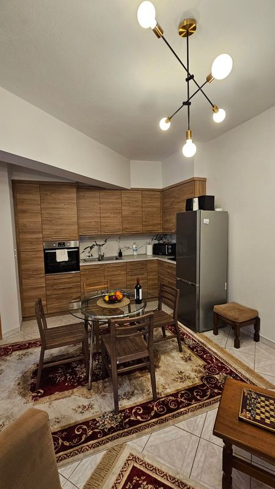
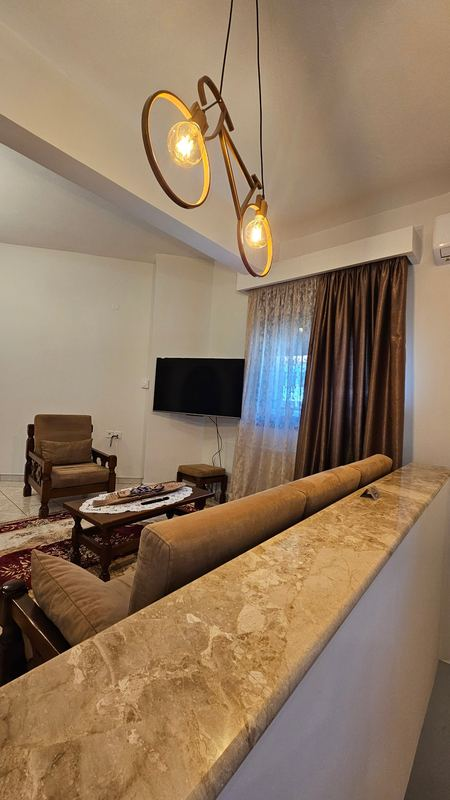

О жилье
до 8 гостей · 3 спальни · 4 кровати · 2 дивана-кровати · 1 ванная · 110 м²
Просторный дом 110 м² в центре Сьятисты, рядом с площадью: рестораны, кафе и пекарня в нескольких шагах. Идеально для семей и компаний.
Большая гостиная с традиционной деревянной мебелью, раскладным диваном, большим телевизором, кондиционером и шахматами для вечеров. Рядом столовая и полностью оборудованная кухня с духовкой, варочной панелью, холодильником, микроволновкой и кофемашиной.
Три спальни с телевизором: две с двуспальной кроватью, одна с двумя односпальными кроватями и раскладным креслом.
Большая ванная с ванной, стиральной машиной, полотенцами и средствами по уходу.
Удобства
- Wi-Fi
- Кондиционер
- Отопление
- Телевизор
- Полностью оборудованная кухня
- Кофемашина Nespresso
- Капельная кофеварка
- Духовка и микроволновка
- Стиральная машина
- Диван-кровать
- Постельное бельё
- Банные полотенца и полотенца для лица
- Шампунь и гель для душа
- Угощение при заезде: вино, печенье и кофе
- Парковка
- Домашние животные по запросу
- Детская кроватка бесплатно
Расположение
3 Pigadia Square 19, 503 00 Siatista